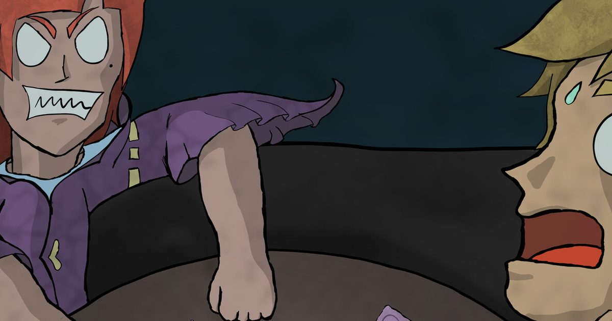

2026-10-29 · 视觉小说
2009 年的那部《命运石之门》，今天（10 月 29 日）终于把主机这一半补完了——PS5、PS4、Switch、Switch 2 同步上线，而 Steam 版早在 8 月 20 日就开卖了。隔了两个月，媒体评测也攒够了：OpenCritic 上 20 家媒体给出 82 分，Nintendo Life 8/10、RPG Site 9/10、DualShockers 9/10、Use a Potion 9/10。数字很好看。但真正有意思的不是分数，是这些评测在同一件事上吵了起来——有人叫它「当今最好的《命运石之门》」，有人直说「它不能被称为决定版」。这不是口味差异，这是重制这门手艺的根本分歧。而我们 8 月 14 日那篇前瞻里没敢下判断的东西，现在有答案了。

先把时间线摆清楚。8 月 20 日，Steam 与 Xbox Series 先发；今天 10 月 29 日，PS5 / PS4 / Switch / Switch 2 在北美与欧洲跟上，Xbox 的西方版本也一并落到这一天。欧洲和英国想买实体卡带或光盘的，还得再等到 11 月 3 日——数字版不受影响。定价 59.99 美元，国区 Steam 标准版 198 元、豪华版 298 元。文本支持英文、日文、繁体中文、简体中文，配音只有日语。系列自 2009 年首作至今全球累计已超过 400 万份。
这些是 8 月那篇就说过的事实。今天能补上的，是「玩完之后」的部分。
1）那条新路线到底是什么。官方卖点 Gamma 世界线（γ）改编自系列广播剧 CD「Gamma」。设定很硬：时间机器从未被造出来，能改写过去的 D-Mail 不存在，而主角冈部伦太郎身上那个「凤凰院凶真」的中二人格——从未诞生过。实验室的伙伴们不但不认他，还把他当敌人。他被推到桐生萌郁身边，两个人一起把手弄脏，在孤独和绝望里找一条回去的路。
2）实测体量。PS4Blog 的评测给出的数字是「大约 3 到 4 小时的替代时间线」。这就和官方当时「从未有人观测过的故事、分量等同半部新作」的说法，对上了也对不上——对得上的是它确实是一条完整路线，对不上的是「半部新作」这四个字。
3）它被评「没做完」。Nintendo Life 的原话是，这条线读起来「有点没烤熟（a tad underbaked），抛出几条很有意思的线索，最后却被轻轻带过」。这句话的分量在于：它不是说新内容不好，是说新内容自己没敢收尾。
4）脚本是「减」的，不是「加」的。Re:Boot 的剧本基于 2018 年的《STEINS;GATE ELITE》——那个用动画版演出镜头、并把原作大量内心独白吃掉的压缩版。而 Re:Boot 在这个压缩版上又削了一轮。Nintendo Life 明确写了：有几场它很喜欢的经典场面被 Re:Boot 精简掉了，而「一个愿意花好几个小时讲黑洞和粒子加速器机制的游戏，为什么偏偏在这一步划了线」，它不理解。
5）真结局的开门方式，十七年没变。这是最要命的一条。想走到真结局，你必须在整个流程里按一个「非常具体但完全任意」的顺序回复特定的邮件。Nintendo Life 的原话：「祝你好运，不看攻略你根本猜不出来。」Use a Potion 的说法更温和一点：「如果你想要真结局，你几乎肯定需要一份攻略，才能避免走错一步。」Press Play 也确认了同一件事，并补了一刀：游戏里新增的「Observer」功能会画出事件与世界线的图谱，算是不错的补充，但它的导航选项很有限，没能成为真正有用的东西。
6）画风变干净了，也变冷了。huke 把所有角色立绘和主视觉重新画了一遍，事件 CG 数量比 Xbox 360 原版翻了一倍，秋叶原背景按 2010 年左右的真实资料重建、增加了约 20%。但 Press Play 说得很直白：原版那种带颗粒感的、稍微粗粝的处理是有性格的，新版「相比之下显得过于打磨，甚至有点通用」。Nintendo Life 用了同一个词——干净，但「冷」且「无菌」。补偿它的是 E-mote：从《Anonymous;Code》搬来的动态立绘技术，角色会呼吸、眨眼、做微表情，某些动作偶尔会僵，但整体让长对话活了起来。
7）几个小到不该出现的洞。全长 25–30 小时。Switch 2 掌机模式不支持触屏——用不上，但这确实是个疏忽。另有几家英文评测提到英文文本偶发被挤压。
这作最值得聊的，不是它改了什么，是它改的和没改的形成了一个特别刺眼的对照。
它敢做的事：把主角的人格从故事里整个抽掉。凤凰院凶真不是一个装饰性的口头禅，它是冈部伦太郎用来挡在现实面前的那层壳——所有丢人的、中二的、撑场面的表演，都是这层壳。Gamma 世界线的设计逻辑很清楚了：把这层壳拿掉，看这个人物还剩下什么。这是相当野的一步，重制版里极少有人敢这么动原作。
它不敢做的事：修那台手机。真结局要靠一串没有任何提示的邮件回复顺序解锁，这件事从 2009 年一路带到 2026 年，中间经过了 ELITE、经过了无数次移植，一次都没动过。它不是技术债——改一个触发条件是几行配置的事。它是被当作「遗产」保护的。
于是同一个制作团队，在同一部作品里，对两类「原作属性」给出了完全相反的判断：画风是可以优化的设计债，邮件系统是不能碰的文化遗产。这个分类本身，就值得被质疑。因为从玩家体验看，画风争议只是口味问题，而邮件系统是一道真实的墙——它每年都会拦掉一批本来能自己走到真结局的人。
再说那个 3–4 小时加上「没烤熟」的组合。我们 8 月那篇把 Gamma 世界线判为「官方同人转正」，现在看要修正一半：它确实是官方新增的 canon 路线，这个含金量没变；但它的体量和完成度，撑不起「为了它重买一遍」的论证。官方抽掉凤凰院凶真这个动作，把问题问得极好——「没有那层壳，冈部还成立吗」——然后用 3 个多小时给了一个半截的答案。这其实反过来证明了一件事：凤凰院凶真不是装饰，它是承重结构。拿掉它，故事能跑 3 小时，跑不完 30 小时。
至于媒体为什么会在「是不是决定版」上分裂——DualShockers 说它是「毫无争议的最佳体验方式」，Nintendo Life 说它「不能被称为决定版」，两边都没说错，因为他们在回答不同的问题。前者回答的是「新人该玩哪一版」，答案是这一版；后者回答的是「哪一版是《命运石之门》」，答案是：没有哪一版是。Re:Boot 把门槛拆了，但没有把正典统一。这可能才是重制最诚实的结局。
| 版本 | 剧本 | 画面 | 独占内容 |
|---|---|---|---|
| 2009 原版（Xbox 360） | 最完整，独白最多 | 颗粒感、粗粝、有性格 | — |
| ELITE（2018） | 压缩版，吃掉大量独白 | 改用动画版演出镜头 | 全动画演出 |
| Re:Boot（2026） | 在 ELITE 上再削一轮，节奏最快 | huke 重画，干净但偏冷；E-mote 动态立绘 | Gamma 世界线（3–4 小时）、Observer 图谱 |
| 2011 动画版 | 单线、节奏最利落 | White Fox 作画 | 适合热身，48 分钟上头 |
🎮 8bitACG 编辑部
我们的评分：重制完成度 8.4 / 10，老粉复购价值 6.8 / 10，综合 7.7。
加分给「敢动主角人格」和「阿保刚全曲重制 + 全语音重录」；扣分给「Gamma 只有 3–4 小时且没收尾」和「真结局触发十七年零改进」。
我们的观察：官方把宣传重心压在「从未有人观测过的世界线」上，交付的是一条漂亮的、半开放的新路线。它不是骗局，但它被当成主线级别的卖点卖，这个定价姿态和它的实际体量之间有落差——而这个落差，恰恰是所有评测含糊其辞的地方。
我们的观点：重制版的伦理问题从来不是「能不能改」，而是「改哪些算亵渎，改哪些算负责」。MAGES. 在这作上把画风判为可改、把邮件系统判为不可改。我们的判断正好相反：画风的粗粝感是原作的皮肤，改了可惜但不致命；而那个不给任何提示的真结局触发，是一道每年都拦人的墙，改它才是对作品负责。
我们的案例 / 对比：同样是「老视觉小说重制」，《秽翼的尤斯蒂娅》《白色相簿》那类补内容的路线，是把当年受技术所限没画出来的补上；《Re:Boot》多走了一步——它补的是「当年没写过的剧情」。但它同时又删了主线，于是变成一边加一边减。这种「加减同做」的重制在 VN 里很罕见，因为加减的判断标准一旦不统一，玩家就不知道自己在买什么。
我们的实验：给今天入坑的人一个可验证的低成本顺序——先开主线，全程不看任何攻略通关一次，记录你自然走进的是哪个结局；如果三次内没能碰到真结局，就证明了我们上面那句话：这不是难度设计，这是信息封锁。然后第二次开档，直奔 Gamma 世界线，计时它实际花了你多久。如果超过 4 小时，说明官方的「半部新作」说法成立；如果在 3 小时以内就结束了，并且你还能说出两条没被收的线索——那我们对「没烤熟」的判断，你自己就验证过了。
59.99 美元、国区 198 元起，25–30 小时，全新的立绘和重录的配音，加一条 3–4 小时、抽掉了凤凰院凶真的新路线。它是新人最好的入口，这一点没有争议；它对老粉值不值，取决于你能不能接受「为了 4 小时的新内容，重看一遍被削过的旧故事」。
而它真正留给行业的那句话，比游戏本身有意思：一部愿意删掉主角人格的重制，同时也是一部不敢改一串邮件顺序的重制。这两件事发生在同一个产品里，说明「原作神圣不可侵犯」这条界线，从来不是画在内容上的，是画在制作方自己心里的——而那条线，常常画错地方。